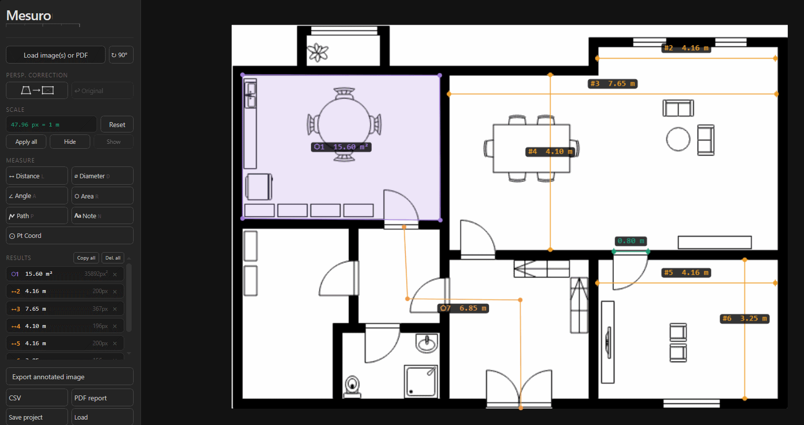

Open the plan
Load a floor-plan image, one PDF page, a page range, or a full multi-page document.
Floor plan measurement
Use Mesuro for a fast calibrated pass on floor plans or PDF blueprints: set a known scale, measure room areas and dimensions, then export a clear annotated result.

Load a floor-plan image, one PDF page, a page range, or a full multi-page document.
Use a labeled room dimension, scale reference, or other reliable measurement.
Check room areas, wall lengths, openings, angles, or coordinates on the selected page.
Create an annotated image, PDF report, CSV file, or reusable project.
Yes. PDF files can be loaded directly in the browser, including multi-page documents.
Yes. After calibration, you can measure room areas, wall lengths, openings, angles and coordinates directly on the plan.
Yes, when the document pages share the same scale you can apply the calibration across pages.
No. It is best for quick calibrated review, annotation and export when a lightweight measurement workflow is enough.